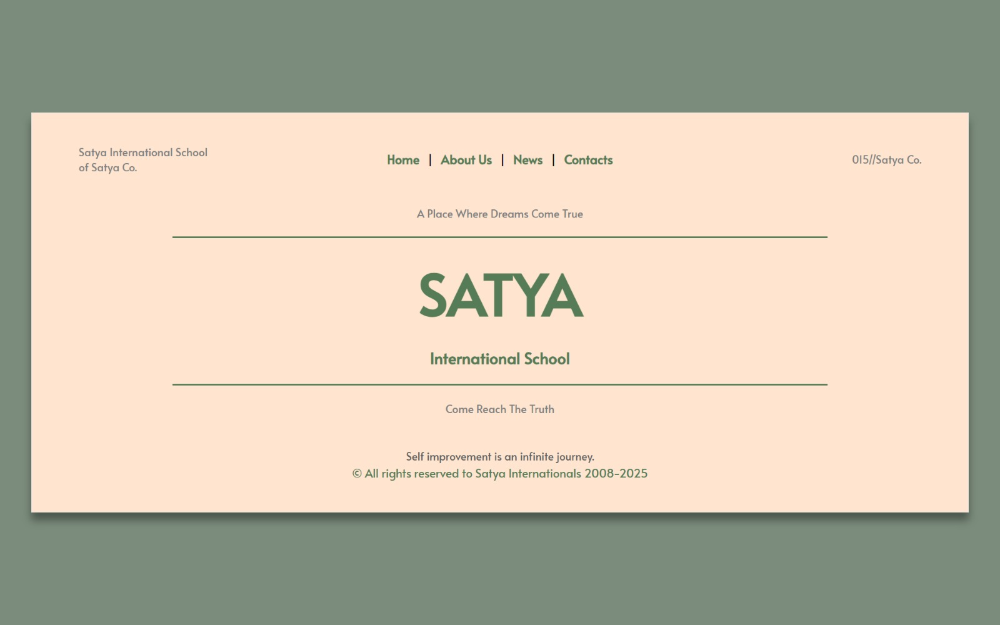
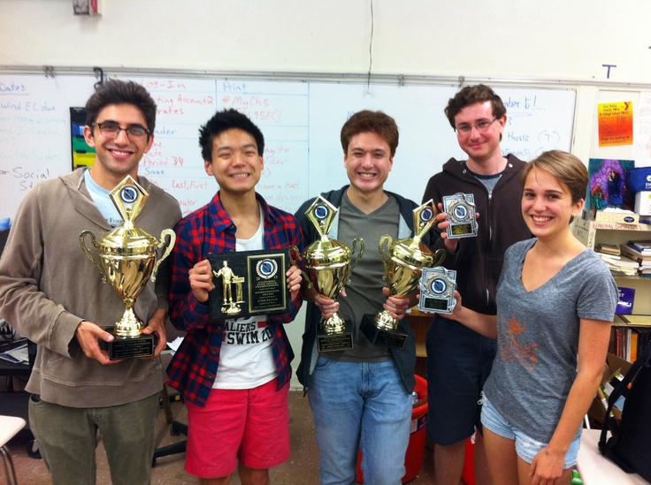
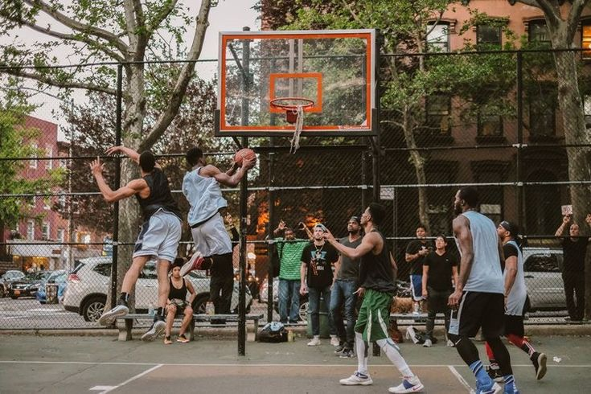

Recent Events
Stay updated with the latest news and events from Satya International School.
Latest News
Sunday, September 29, 2024
Satya International School is excited to unveil its newly launched website, designed by the founder of Satya Internationals itself, Dr. Reigha to enhance the user experience for students, parents, and staff. The website boasts a modern and sleek design that reflects the school’s commitment to innovation and excellence. Though still being developed, we promise to provide an excellent experience for our community.
Key features of the new website include:
- User-Friendly Navigation
-
- The intuitive layout ensures that visitors can easily find the information they need, whether it’s academic calendars, event updates, or contact details.
- Comprehensive Informations
-
- The site provides detailed sections on the school’s curriculum, extracurricular activities, admission procedures, and faculty profiles.
- Mobile Compatibility
-
- Fully optimized for mobile devices, ensuring that users can access the site seamlessly from their smartphones and tablets.
Friday, September 27, 2024
Satya International School is thrilled to announce that its debate team has secured first place in the prestigious annual inter-school debate competition! This remarkable achievement is a testament to the team’s dedication, hard work, and exceptional debating skills. This victory not only brings pride to Satya International School but also sets a high standard for future competitions. Congratulations once again to the debate team on their outstanding achievement! 🎉
Wednesday, September 25, 2024
Satya International School’s annual sports day, held on September 25, 2024, was a resounding success, bringing together students, teachers, and parents for a day filled with excitement and athleticism.
Here are some highlights from the event:
The annual sports day not only highlighted the physical talents of the students but also fostered a sense of community and school spirit. It was a day to remember for everyone involved! Did you attend the sports day? If so, what was your favorite part of the event?